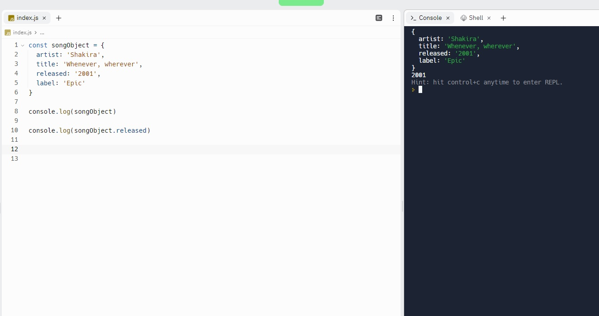
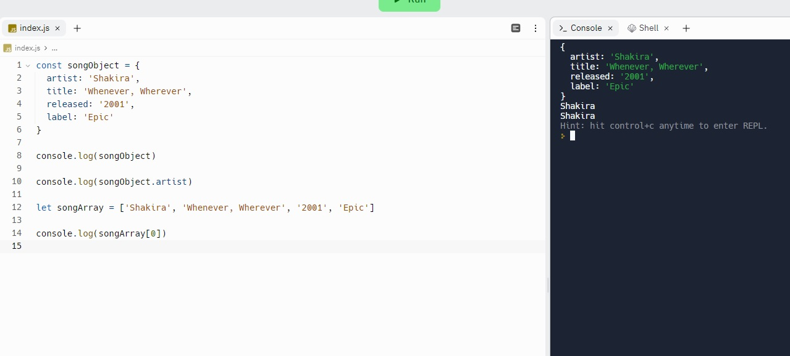

Javascript Technical Blog
- An analogy to describe JavaScript and its relationship to HTML and CSS
Ah JS, HTML and CSS: the three amigos. A way I like to think about them is that if you consider a web page to be a language, then
HTML would be the nouns, CSS would be the adjectives, and Javascript would be verbs. Nouns are static, informative - your basic
building blocks. Adjectives breathe a bit of colour into these nouns (quite literally in the case of CSS). But then you also need
your webpage to DO stuff. React to input, display some information and so forth. Javascript is like the lightning that makes it
come alive.
- Explain control flow and loops using an example process from everyday life, for example, 'waking up'
or 'brushing your teeth' (but not those).
So control flow is like the order in which the computer processes the lines of code, which means sequentially from start to finish.
But depending on what code there is, this can be altered or temporarily diverted laterally, or backwards. Think of it like going
shopping (sorry for using an analogy so pedestrian and excruciating). All the items in the supermarket are laid out in a particular
order, and in aisles, so that when walking from entrance to exit, you will go past all of them. If you were making an apple pie,
you might have a little loop that says: current amount of apples in trolley, total needed to make the pie (say, 10), go through
loop again – take apple from section and put in trolley. Or other conditional statements that might disrupt the flow, such as “if
there is no coconut cream, go back to the organic section and get one of those. Or else put can of coconut cream into shopping
trolley.”
- Describe what the DOM is and an example of how you might interact with it
This one took me a while to wrap my head around, because I was expecting it to be like, a concrete THING, but the clue is in the
title: Document object MODEL. It is more like a framework for representing the information that is already in your HTML and
associated files, whereby it is treated as one big tree type structure with a whole bunch of branches (nodes). Nodes are each
individual element, and the document is the tree itself. A visual example from the internet:

But what does the "object" part mean? This part refers to a data type used in javascript, where you have something which contains
multiple properties and values, for example:

This shows an object called songObject, and also how you can access specific properties of the object. It turns out getting or
setting information in this fashion is very efficient and handy, so by rendering your whole web page as a series of these objects
you can use javascript functions to do stuff to it. Some examples of things you might want to do is find a particular paragraph,
or change the text, or listen out for when the user is moving their cursor over a particular part of the page.The DOM also serves
as kind of a universal organisational standard that makes all web pages more easily legible and facilitates greater collaboration
between developers.
- Explain the difference between accessing data from arrays and objects.
The two are very similar, in fact an array is a type of object. Visually the code for an array is just just a series of things in
square brackets separated by commas, whereas in objects each thing has a name and and value. But really, in arrays each entry has
a “name” under the hood too, it’s just a number but counting up from zero.

As you can see in this example, the console is displaying Shakira twice. When accessing it via the array, I’m telling it to retrieve
the entry at position zero, whereas with the object I am telling it to retrieve the value associated with the name ‘artist’ (to avoid
confusion I placed this name:value pair first). Essentially with arrays you are more concerned with position within the array,
whereas objects it is the name for the value. Names may be generally easier to remember depending on what the data is.
- Explain what functions are and why they are helpful
Functions can initially sound not very interesting if they conjure up some high school maths connotations, but they are much much
more powerful than just taking two fives and returning 25. They take some input, or multiple pieces of input (for example a number,
some words, or even other functions) and then carry out some activities on them, then return some new information. They could search
through a large collection of data and return true or false depending on some pre specified criteria. They could provide a random
number which could then be converted to a corresponding entry in an array. Or if there is a series of menial tasks you find you keep
repeating, you could create a function for these to save you time, then in future you just have to call the function rather than
doing the same things over and over. In this regard they can act like macro shortcuts you may have created for yourself whilst
using a piece of software. Calling the function would be like pushing the keyboard shortcut you chose for the macro, then it
executes all the things you want it to in sequence in order to complete some higher order task.
Back